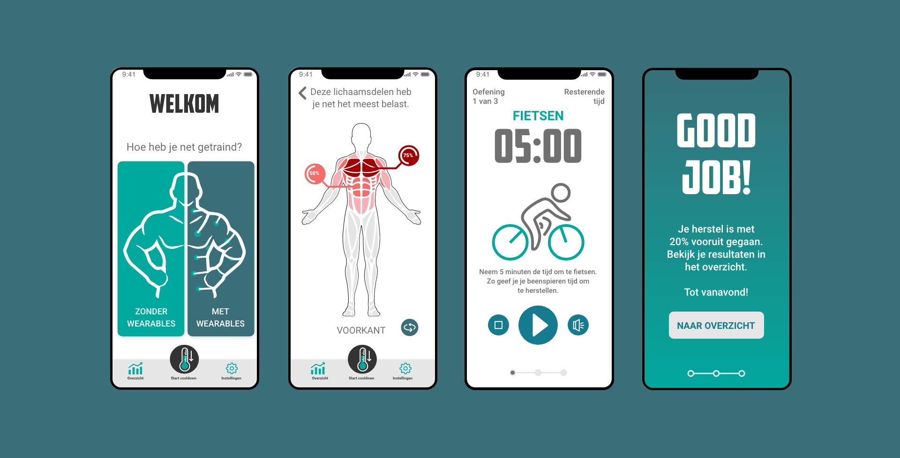
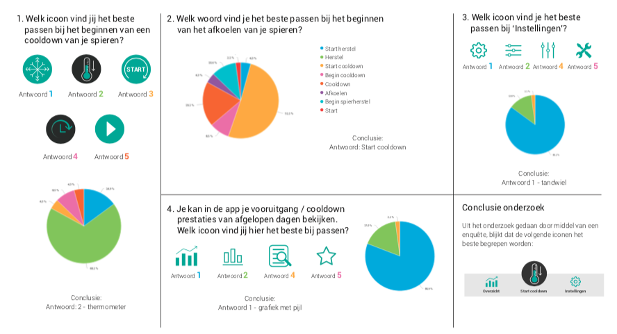
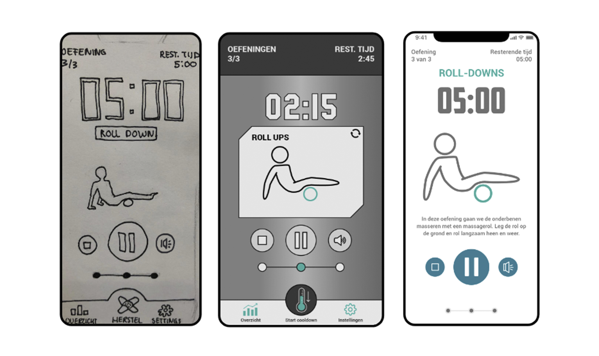
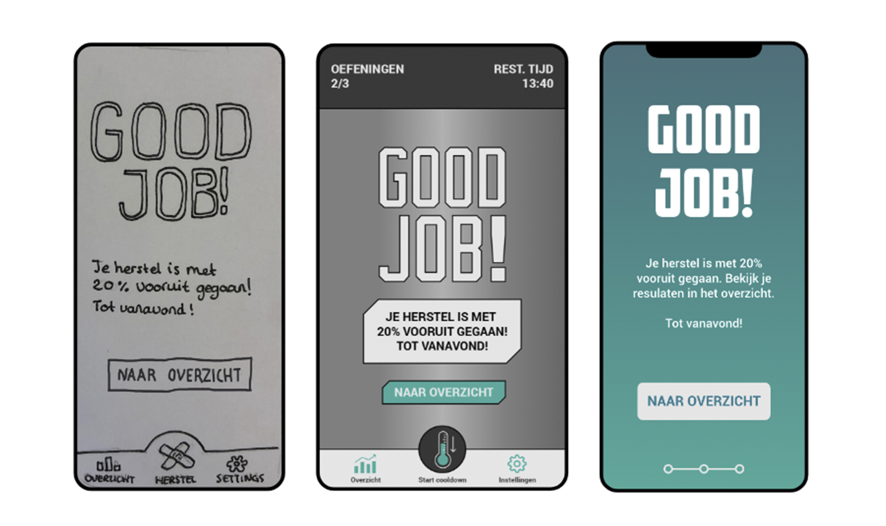
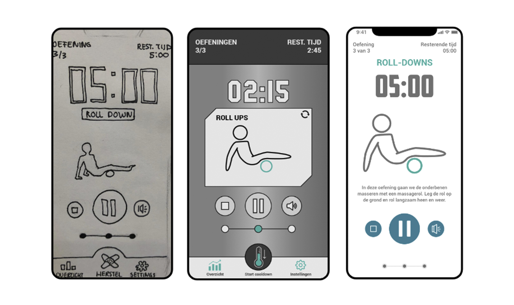
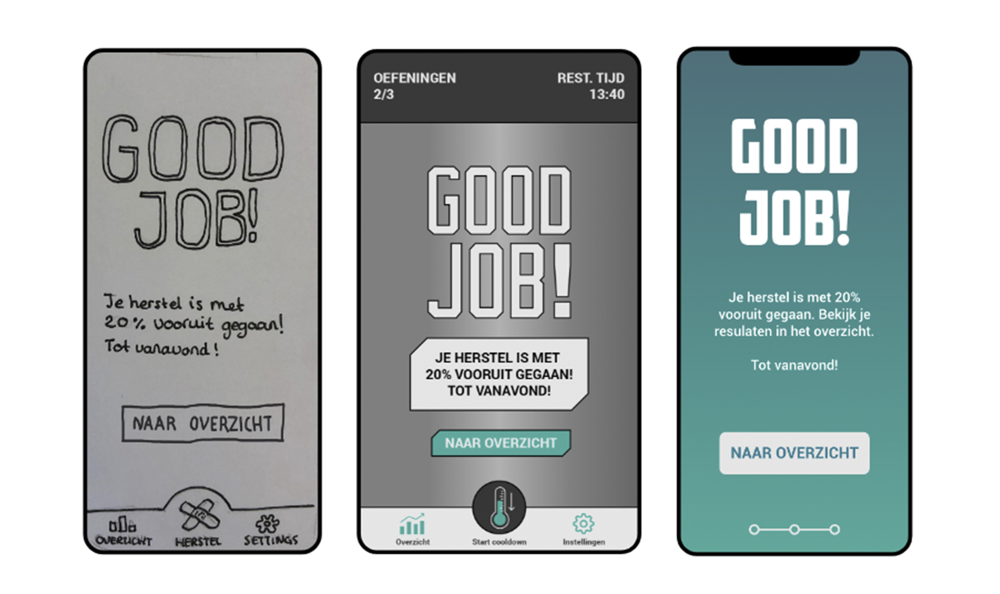

De opdracht
Help gewichtheffer Teun zijn doelen te behalen middels een applicatie. Het doel van Teun was om betere spierherstel sessies te doen, zodat hij beter kan presteren op het Nederlands Kampioenschap.
Het idee
Cooldown is een applicatie gemaakt voor sporters die geen tijd nemen om hun spieren te masseren na een workout. De app helpt de sporters door middel van een aantal masseer-oefeningen op te stellen door te kijken hoe zwaar ze getraind hebben. Er start een ‘cooldown’ op maat voor de sporter. Door het zien van de tijd die afloopt, motiveert het de sporters om de oefeningen af te maken.
Mijn taak
Het project heb ik samen met 4 andere klasgenoten gemaakt. Mijn rol binnen het team bestond voornamelijk uit het low-fidelity prototype schetsen samen met 1 andere teamgenoot. Ik was verantwoordelijk voor de tabbar met de iconen. Het mi-fi is ontworpen door een teamgenoot en ik heb daarna het hi-fi gemaakt in Adobe XD.
Iteraties
Tijdens dit project stond het maken van iteraties centraal. Wanneer er een prototype gemaakt was, gingen we deze testen bij de doelgroep. Daar kwam bijvoorbeeld uit dat de iconen niet begrepen werden. We hebben een kleine enquete gehouden met verschillende alternatieven:
Verder zijn dit de belangrijkste iteraties die we gemaakt hebben:
 


